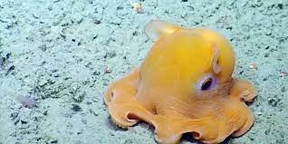

Welcome to the page tiny yet adorable octopus. Unlike most octopuses, the Flap Jack Octopus' tenticles are connected through webbing allowing it to swim by pulsating, similar to jellyfish. This ocotpus is known to flatten out like a pancake when it feel threatened to hide from predators.
If you absolutely love Flap Jack Octopus, and want to read an adorable story about them check out: Adventures of a Flap Jack Octopus By: Charles Watson and Wendy Louise Thompson.